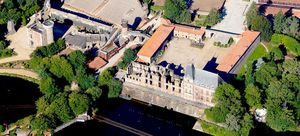
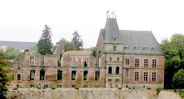
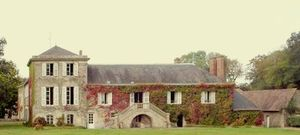
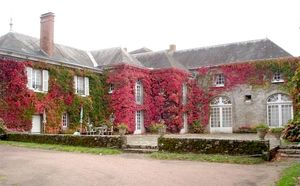
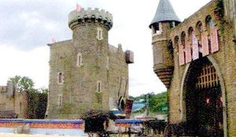
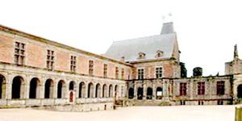
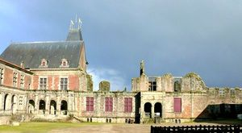
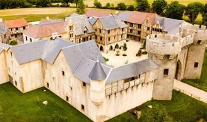
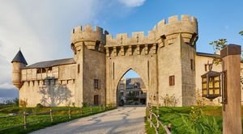

Recensement Jean-Claude Truffet
| Département | 85 — Vendée |
| Canton | Les Herbiers |
| Commune | Les Epesses |
| Type d'édifice | Château |
| Période d'origine | XVI |









PUY du FOU, les origines de la famille du Puy du Fou sont un peu incertaines, mais remonteraient à la fin du XIIe siècle. Renaud du Puy du Fou, seigneur, épouse avant 1197 Adelis de Thouars. Il serait le premier Puy du Fou connu. Il a au moins deux fils; Philippe continue la lignée, son frère Renaud épouse Eustachie de Monbail et serait donc seigneur de Monbail. Dans la lignée du Puy-du-Fou, Jehan devient seigneur de Bourneau en épousant Jacquette de la Ramée. Son fils Pierre, seigneur du Vernay, épouse Aliénor de Juch, dame de Chavagnes-les-Redoux et des Touches en 1469, sans postérité. François II du Puy du Fou, capitaine de Nantes, épouse en 1527 la fille du gouverneur, Catherine-Laval de Bois Dauphin, et lance la reconstruction de son château en 1547, à la mort de François II en 1458 son fils René futur gouverneur de la Rochelle puis sa veuve Catherine de la Rochefoucault poursuivent les travaux. Le château du Puy du Fou sera vendu en 1659 à Claude de Boyslève, les descendants au XVIIIe siècle passe aux, la Forest d'Armaillé puis aux Marconnay et en 1791 acquis par le Marquis de Belboeuf. En 1851 aux comte de Quénetain . En 1949 un notaire de Bressuire monsieur Savard l'acquiert et depuis 1977, le conseil général de la Vendée racheta le château et y créa, avec l'aide de l'État et dans l'esprit des projets muséographiques de Georges-Henri Rivière, en 1977 , au même moment un jeune homme, Philippe de Villiers, à la recherche dun lieu pour son spectacle historique.
PUY du FOU, le château fort du XIIe siècle était d'assez petite superficie, il dessinait une enceinte presque hexagonale d'environ 30 m de diamètre, et flanquée de tours rondes à chaque angle, dont deux au Nord et deux petites au Sud. Un fossé sec encerclait le château, et un deuxième fossé encerclait à son tour le premier, et il était plus large, plus profond et relié à la rivière qui alimentait ce fossé pour former des douves en eau. Notamment avec une grosse tour ronde très près de l'entrée principale au Nord. Cette tour Nord-Est, qui servait de tour-maîtresse, fait environ 9 m de diamètre à l'extérieur, et à l'intérieur l'espace fait environ 3,10 m. Les murs ont une épaisseur moyenne de 3 m. Ce ne devait sûrement pas être un donjon résidence, l'espace intérieur étant trop petit pour être habitable. Ce devait être la tour la plus haute du château, et servit de tour de guet. Au Sud, il y avait deux petites tours rondes et probablement une poterne. A l'Est, se trouvait un tertre, peut être l'ancienne motte castrale. A l'intérieur, on voit quelques pans de mur peu épais, ils devaient appartenir à des bâtiments adossés aux remparts et encerclant la cour intérieure. Il devait y avoir un logis seigneurial, des cuisines, celliers, salle de réception, salles de justice. De plus, une chapelle castrale dédiée à Sainte-Marie-Madeleine était adossée au rempart. En 1794 partiellement incendié par les colonnes infernales des Turreau. A été classé aux M.H. en 1974 et en 1986.
Marquis de Belboeuf Famille de Philippe de Villiers
"
Aux Espesses la citadelle et le château du Puy du Fou: 46° 53' 02" Nord, 0° 53' 56" Ouest